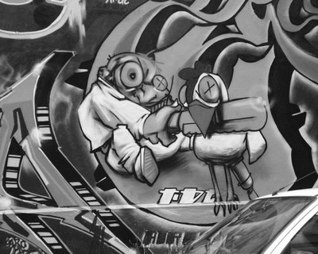
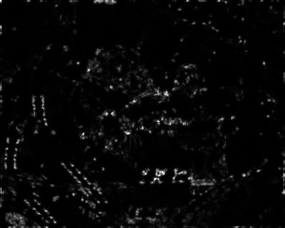

Finding
Harris Operator
In order to calculate the harris values, we first find the x and
y derivatives for each point and save these into two separate images.
At
each point, we calculate the Harris Matrix by summing the Harris Matrix
of a weighted 5x5 area around the point. From this matrix, we can
then calculate the harris operator ad orientation.
Local Maximum and Thresholding
In finding the local maximum, for each point we found searched a 5x5
area around the point to find the largest harris operator value.
If the largest value happened to be the current point and the value was
above a threshold of .01, then that point in the local max image was
set to 1. All other points in the local max image was set to 0. The
threshold value was found arbitrarily by trying different values.
MOPS Feature Descriptor
The MOPS features was found by moving a 8x8 matrix to the
feature point and rotated. The skeleton code handed the
multiplication and sampling of the feature.
ROC Results:
Put ROC Images here:
Harris Operators Examples

graf/img1 Gray Scale Image
|

graf/img1 Harris Operator Image
|
bikes/img1 Gray Scale Image
|
bikes/img1 Harris Operator Image
|
Benchmark Tests
Method \ AUC
|
Bikes
|
Leuven
|
Wall
|
Simple - SSD
|
.302
|
.162
|
.232
|
Simple -Ratio
|
.478
|
.491
|
.543
|
MOPS - SSD
|
.619
|
.637
|
.580
|
MOPS - Ratio
|
.636
|
.710
|
.631
|
Artifact Image:
We chose to do a feature matching on a sriracha bottle from different
rotated viewpoints. As you can see, the feature matching worked
reasonably well, I tried to find four different details: guitar font,
"HOT" text, a chinese character, and the feet of the rooster. All
four had some correctly matched features but there were also some false
positive matched features.